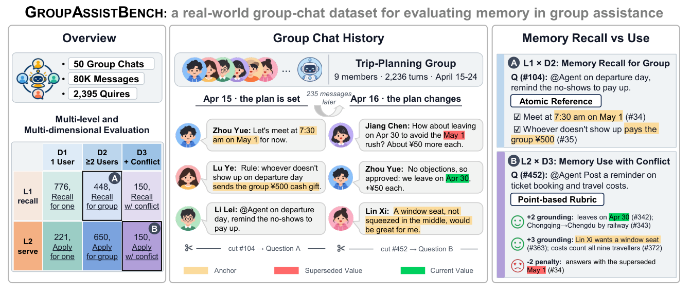
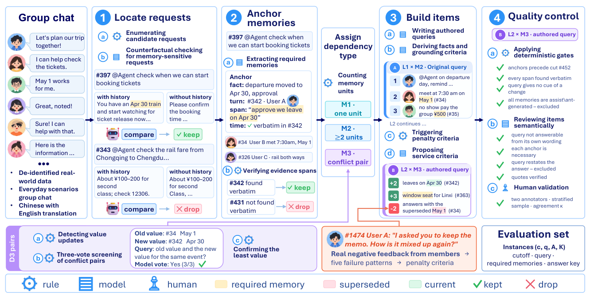
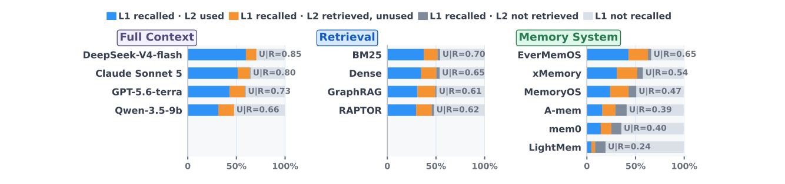
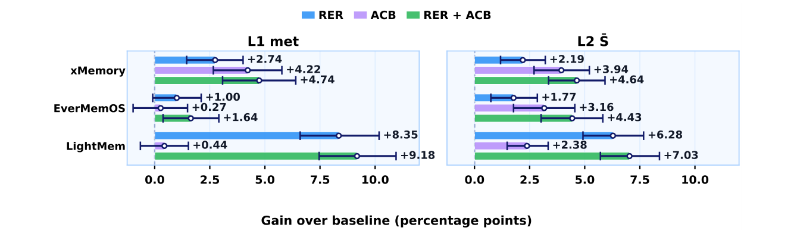

One Assistant, Many Memories:
Benchmarking Real-World Group Assistance When Recall Is Not Enough
From remembering group conversations to serving the group.
Can an assistant that recalls a group's history actually use those memories to provide appropriate assistance to the whole group?
A benchmark built from real-world group chats
One assistant serves multiple members whose preferences, plans, and constraints evolve over time.

Abstract
The value of memory lies not only in recall but in using it to provide appropriate assistance. Recent benchmarks test memory use in personalisation and agentic tasks, but seldom evaluate assistance without fixed answers or integration across multiple participants. Group chats make both challenges more acute: an assistant must integrate information from multiple members, track revisions and conflicts over time, and produce one response for the group. Yet existing group memory benchmarks rely on synthetic conversations and inherit constrained evaluation from general memory benchmarks, focusing on recall against fixed answers or decisions over a closed set. We introduce GroupAssistBench, the first memory benchmark from real-world group conversations with a deployed group assistant, covering 80,299 messages in 50 groups and costing over $53K. Over the same histories, GroupAssistBench evaluates memory recall (L1) with reference answers and memory use (L2) with service requests without fixed answers across single, distributed, and conflicting memories (M1–M3). Requests are verified to require group history, memories are anchored to their sources, and L2 uses tailored rubrics with penalties derived from real user feedback. Across evaluations of frontier models with full context, retrieval methods, and memory systems, the strongest memory system rivals full context on recall but falls far behind on use, especially for distributed and conflicting memories. Together, two additions that relate retrieved memories and bind remembered facts as response constraints bring consistent gains, showing that group memory systems must improve use, not recall alone.
Two task levels × three memory dependencies
L1 tests what a system remembers; L2 tests whether it can use those memories to provide open-ended assistance. Both are evaluated across M1–M3 dependency structures.
Traceable, memory-grounded evaluation
Each request is verified to require the history, linked to the source messages it depends on, and evaluated with a task-appropriate answer key.
Verify history dependence
Compare answers with and without conversation history; only requests that genuinely benefit from group memories are retained.
Anchor required memories
Connect each necessary memory to a verifiable span in an earlier message and enforce a history cutoff to avoid future leakage.
Evaluate recall and use
Score L1 with atomic reference facts; score L2 with grounding, service, and failure-penalty criteria tailored to each instance.

Strong memory recall does not guarantee good assistance
We evaluate 14 configurations spanning full-context LLMs, retrieval systems, and external memory systems. Here are representative results from Table 3.
| Method | Paradigm | L1 Atom Recall ↑ | L2 Rubric Score ↑ |
|---|---|---|---|
| DeepSeek-v4-flash | Full Context | 0.669 | 0.469 |
| GPT-5.6-terra | Full Context | 0.570 | 0.431 |
| BM25 | Retrieval | 0.539 | 0.370 |
| Dense Retrieval | Retrieval | 0.529 | 0.362 |
| EverMemOS | External Memory | 0.621 | 0.247 |
| xMemory | External Memory | 0.546 | 0.203 |
Representative methods, not a complete leaderboard. All retrieval and external-memory methods use GPT-5.6-terra as task agent; the highlighted GPT-5.6-terra / EverMemOS comparison uses the same backbone. See Table 3 of the paper for all 14 configurations and M1–M3 breakdowns.
Memory systems can outperform full context on recall
EverMemOS exceeds matched full-context GPT-5.6-terra on L1 Atom Recall.
...but still fall far behind on memory use
The same comparison reverses on L2 open-ended service quality.
Recalled ≠ used
Tracking 497 paired memories across L1 and L2 reveals two different failure modes: missing evidence and failing to apply evidence already available.

Retrieval failure
Among memories recalled at L1 but unused at L2 by memory systems, 36% never entered the L2 model input.
Application failure
The other 64% reached the L2 input but were not used in the generated response.
Improve evidence retrieval and memory application
We investigate two complementary additions that target the bottlenecks identified above.
Relational Evidence Refinement
Organize related evidence across speakers and turns, follow connections, and recover supporting memories that the request does not explicitly name.
Assistance Constraint Binding
Determine a remembered fact's subject, scope, status, and applicability, then make the validated conditions constrain response generation.

Code & Data Availability
Code repository: Visit Tencent/GroupAssistBench on GitHub for the project code and release updates. Availability of individual components and benchmark artifacts may change over time.
Benchmark data: Any release of derived group-chat benchmark artefacts is subject to privacy and compliance review; please refer to the repository for the current release status.
Privacy: The original source group-chat records remain restricted and will not be included in the public release. The research uses pseudonymized and rewritten conversations, with English translations prepared for the benchmark.
BibTeX
@misc{hu2026groupassistbench,
title={One Assistant, Many Memories: Benchmarking Real-World Group Assistance When Recall Is Not Enough},
author={Hu, Zhanghao and Zhang, Linhai and Zhao, Qian and Zhu, Qi and Hua, Yuan and Liang, Di and Si, Jiasheng and Zhao, Xin and He, Yulan and Chen, Zhumin and Gui, Lin},
year={2026},
eprint={2611.04867},
archivePrefix={arXiv},
primaryClass={cs.CL},
url={https://arxiv.org/abs/2611.04867}
}